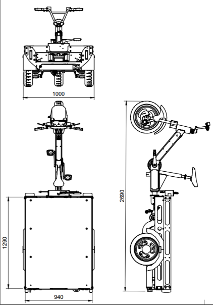
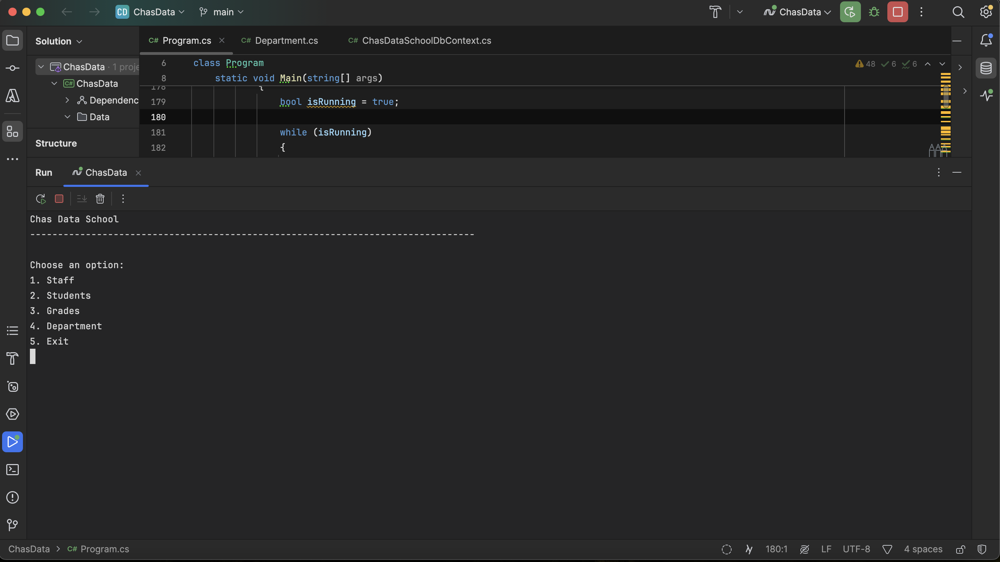
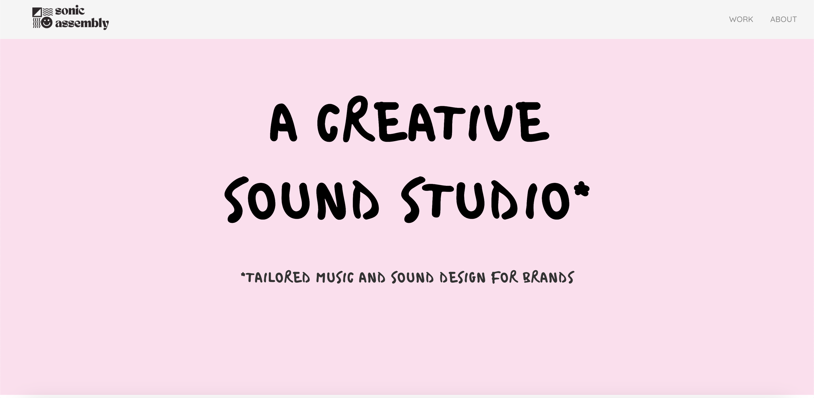

Velosonics is a project concept aimed at identifying the potentials of utilising sonic data to collect information on the urban environment by applying sound design techniques to delivery bikes. This cross-sector collaboration brings together a Swedish creative sound studio, Sonic Assembly, and an Italian sustainable logistics company, MoveByBike, united by a shared interest in working towards more human-centric cities driven by data. The pilot phase for this project takes place over 2025 with support from the European Commission via the CreativeFLIP cross-sectoral innovation fund.

As part of my education at Chas Academy, Stockholm, I built an application that was based on a simulated school which allowed a user with admin priviledges to perform a range of functions, including adding students, sorting staff by department, viewing grades and more.
The application was built using the .NET framework in C# as well as SQLLite and Azure Data Studio. The application was built using Entity Framework and on EEF Modeling to simulate a school with the possibility of being scaled up.

Sonic Assembly is the name of the creative sound studio that I run as a freelancer. I built the website to act as an online space where I can showcase the client work that I have done, as well as share the services that I offer as a composer and sound designer.
In it's first form, I have built the website using a template-based site-builder hosted on Wordpress. The website is simple and is designed to give potential clients a feeling of "playfessionalism", that is professionalism meets playfulness. For this, I focussed on an ice-cream-flavoured inspired colour-pallette, and fun fonts.
The website has a few moving elements including a text-marquis on the about page as well as animated text on the main hero.